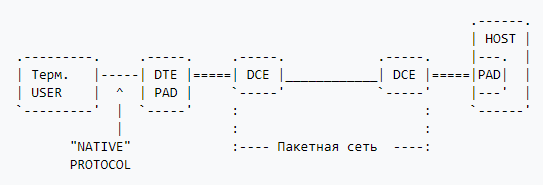

X.25
X.25 — стандарт канального уровня сетевой модели OSI. Предназначался для организации WAN на основе телефонных сетей с линиями с достаточно высокой частотой ошибок, поэтому содержит развитые механизмы коррекции ошибок. Ориентирован на работу с установлением соединений. Исторически является предшественником протокола Frame Relay.
X.25 обеспечивает множество независимых виртуальных каналов (Permanent Virtual Circuits, PVC и Switched Virtual Circuits, SVC) в одной линии связи, идентифицируемых в X.25-сети по идентификаторам подключения к соединению, идентификаторам логического канала (Logical Channel Identifier, LCI) или номеру логического канала (Logical Channel Number, LCN).
Благодаря надёжности протокола и его работе поверх телефонных сетей общего пользования X.25 широко использовался как в корпоративных сетях, так и во всемирных специализированных сетях предоставления услуг, таких как SWIFT (банковская платёжная система, прекратили использование в 2005 году) и SITA (фр. Société Internationale de Télécommunications Aéronautiques — система информационного обслуживания воздушного транспорта), однако в настоящее время X.25 вытесняется другими технологиями канального уровня (Frame Relay, ISDN, ATM) и протоколом IP, оставаясь, однако, достаточно распространённым в странах и территориях с неразвитой телекоммуникационной инфраструктурой.
MTU для X.25 равно 576 байт. Также это число считается минимальным размером дейтаграммы, которую должен уметь принять и обработать любой хост в интернете.
Архитектура

Режимы и типы пакетов X.25
- Режим установления соединения (Call setup mode) используется при установлении соединения SVC между DTE-устройствами. В этом режиме на уровне PLP используется схема адресации X.121 для установления виртуального соединения. Режим установления соединения работает на уровне виртуальных каналов, то есть в пределах одного физического DTE-устройства одни SVC могут быть в состоянии установления соединения, а другие — в режиме передачи данных или разрыва соединения. Режим установления соединения используется только в случае установления SVC, но не PVC.
- Режим передачи данных (Data transfer mode) используется при передаче данных по виртуальному каналу. При этом X.25 PLP ответственен за сегментацию данных в пакеты и сборку пакетов, управление передачей данных и коррекцию ошибок. Режим передачи данных работает на уровне виртуальных каналов и используется в случае как SVC, так и PVC.
- Режим ожидания (Idle mode) характеризуется отсутствием передачи данных при установленном виртуальном канале. Работает на уровне виртуальных каналов и используется только в случае установления SVC, но не PVC.
- Режим разрыва соединения (Call clearing mode) используется при разрыве соединения SVC между DTE-устройствами. Работает на уровне виртуальных каналов и используется только в случае разрыва SVC, но не PVC.
- Режим перезапуска (Restarting mode) используется для переустановки соединений между DTE-устройством и локально работающих с ним DCE-устройствами. В отличие от других режимов, выполняется в пределах одного физического DTE-устройства, что сопровождается разрывом всех виртуальных каналов, установленных с этим DTE.